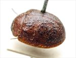
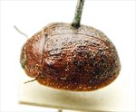
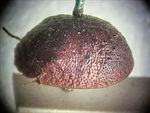
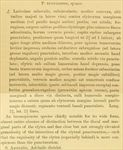

Click on images to enlarge
.jpg){kind=link}

Fig. 1. Paropsis rugulosior type specimen
.jpg){kind=link}

Fig. 2. Paropsis rugulosior type specimen
.jpg){kind=link}

Fig. 3. Paropsis rugulosior type specimen
{kind=link}

Fig. 4. Paropsis rugulosior, description
Name
Paropsis rugulosior Blackburn, 1896
Corresponds to
No known correspondence with any of the species codes.
Diagnosis and Notes
Blackburn (1896) deals with T. rugulosior as part of his 'subgroup iii' (i.e., those species without "strongly marked characters", whose greatest height is not or scarcely in front of the middle of the elytral margin and whose elytra are not depressed under the humeral callus). Within that group, he characterises it as:
A. Elytra with a distinct postbasal impression on disc;
B. Elytral margin (viewed from the side) straight or but little sinuous;
C. Elytral puncturation (and especially its seriation) much obscured by irregular transverse rugulosity;
D. Elytra not marked with a common dark blotch behind the scutellum;
EE. Elytral verrucae of hind declivity sparse and confused;
F. Inner edge of humeral calli evidently nearer to lateral margin than to suture.
This species appears similar to the Ta06 group species (though it is a little above the normal size of males of that group), or may also belong to the group of small species (such as Ta120) that are common in the mallee regions of southern Australia.
Type specimen
Location: BMNH
Label data: /“Type” (red-bordered circle)/ “6174 Ad. T”/ “Blackburn coll. 1910-236.”/ “Paropsis rugulosior Blackb.”/.
Male; Size: 6.5 (L) x 5.2 (W) x 3.2 (H) mm; A-A: 1.02 mm; HCE/BL: ~ 22.5% (rough estimate from photo of lateral view of type specimen).
Head brown, black at extreme rear; pronotum brown; elytra brown with many ill-defined verrucae that are just slightly darker than derm.
Original description
Translation of original description (Figure 4) by ChatGPT, 04/2026:
♂. Very broadly suboval, almost circular; moderately convex, of greater height (in lateral view), with the highest point placed about the middle of the elytral margin (or a little before it); fairly shiny; ferruginous, the underside, legs, and elytra more or less shaded with dark, their warts pitchy. Head rather closely and somewhat roughly punctate. Pronotum wider than long as about 2⅔ to 1, from the apex long broadened beyond the middle, behind the apex lightly transversely impressed, rather closely and somewhat strongly, somewhat rugulosely (coarsely rugulose at the sides) punctate; sides moderately rounded, not flattened, posterior angles absent. Scutellum shiny, scarcely punctate. Elytra not depressed below the humeral callus, behind the base transversely impressed, closely and not very strongly somewhat in rows (much coarser at the sides, posteriorly finer) punctate; with moderately large, fairly numerous verrucae, irregularly arranged; interspaces (except the subbasal impressed part) closely granulose-rugulose (especially toward the apex); marginal area scarcely distinct from the disc; humeral callus slightly more distant from the suture than from the lateral margin; basal ventral segment punctate. Length 2⅘ lines [~6 mm]; width 2⅖ lines [~5.1 mm].
References
Blackburn, T. 1896, "Revision of the genus Paropsis. Part I", Proceedings of the Linnean Society of New South Wales, vol. 21, no. 4, 637-693 (page 679).
Copyright © 2026. All rights reserved.